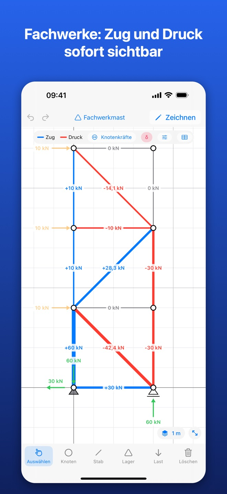
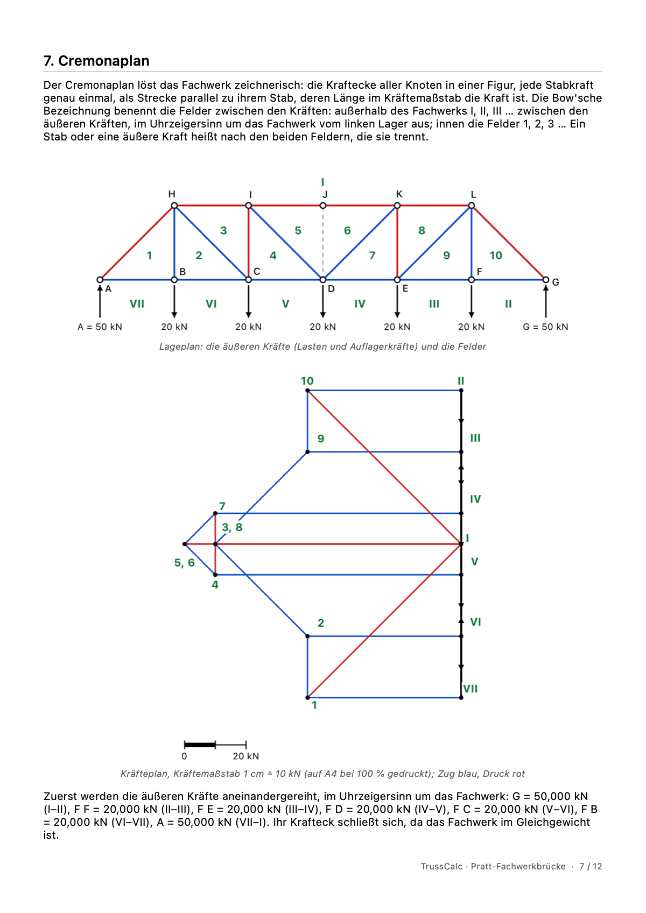
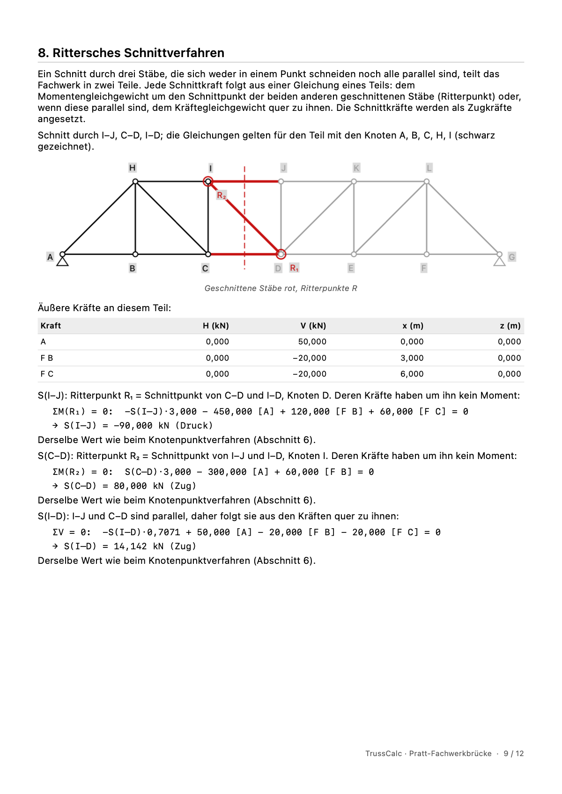

Fachwerk berechnen – mit Rechenweg
Zeichne die Knoten und Stäbe auf dem Raster, setze ein Festlager und ein Loslager, trage die Knotenlasten ein und tippe auf „Berechnen“. Zugstäbe erscheinen blau, Druckstäbe rot, die Stabkräfte stehen an den Stäben.


So rechnet TrussCalc ein Fachwerk vor
- Statische Bestimmtheit: n = s + a − 2k mit den Zahlen deines Systems
- Auflagerreaktionen: Momentengleichgewicht um ein Lager, dann ΣV und ΣH, mit Kontrolle um das zweite Lager
- Nullstäbe: nach den beiden Regeln, mit Skizze
- Knotenpunktverfahren: Knoten für Knoten mit Freikörperbild, ΣH = 0 und ΣV = 0
- Cremonaplan: Lageplan und maßstäblicher Kräfteplan
- Ritterschnitt: Schnitt durch drei Stäbe, Momentengleichgewicht um die Ritterpunkte (sind zwei der Stäbe parallel, das Kräftegleichgewicht quer zu ihnen)
- Verschiebung: die größte Knotenverschiebung mit dem Arbeitssatz (Prinzip der virtuellen Kräfte)
Knotenpunktverfahren und Ritterschnitt gibt es für statisch bestimmte Fachwerke mit drei Auflagerkräften, den Cremonaplan für statisch bestimmte Fachwerke; ist ein Schritt bei deinem System nicht möglich, steht im Lösungsweg, warum.
Beispiel als PDF: Pratt-Fachwerkbrücke, 18 m Spannweite


In der App enthaltene Fachwerk-Beispiele
Pratt-Fachwerkbrücke, Warren-Fachwerkbrücke, Polonceau-Dachbinder, Kragfachwerk, K-Fachwerkbrücke – zum Öffnen, Berechnen und Verändern.
Nur zum Lernen. TrussCalc ist ein Lernwerkzeug. Prüfe die Ergebnisse immer von Hand oder mit anderer Software. Die App ersetzt keine Tragwerksplanung.